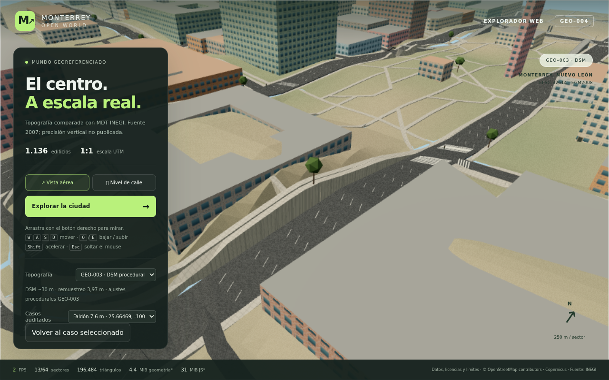
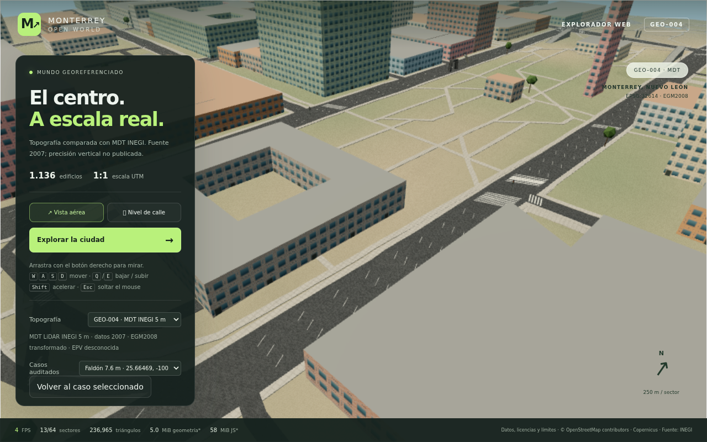
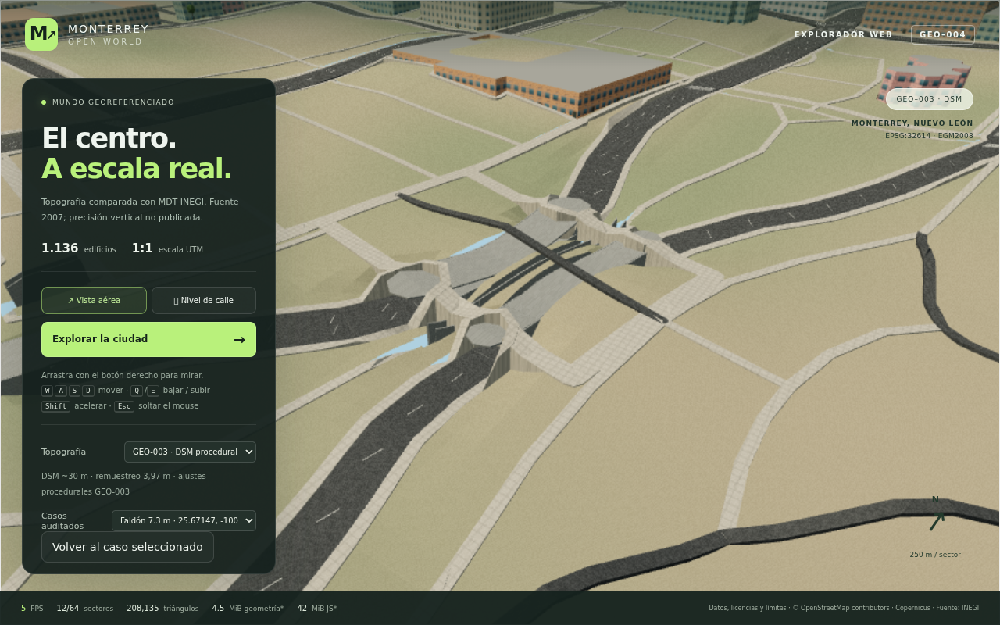
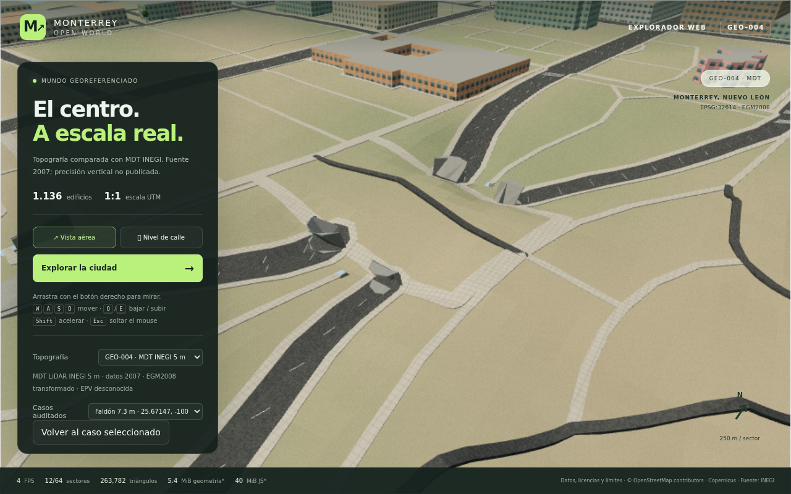
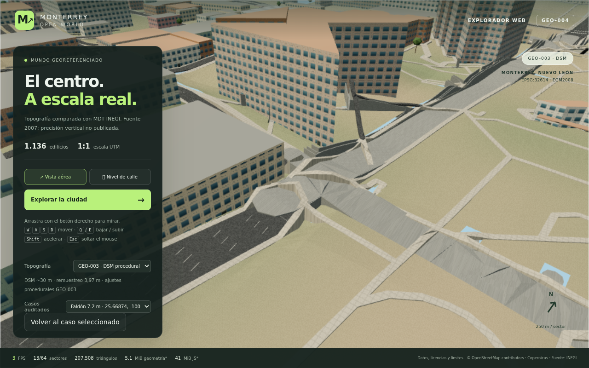
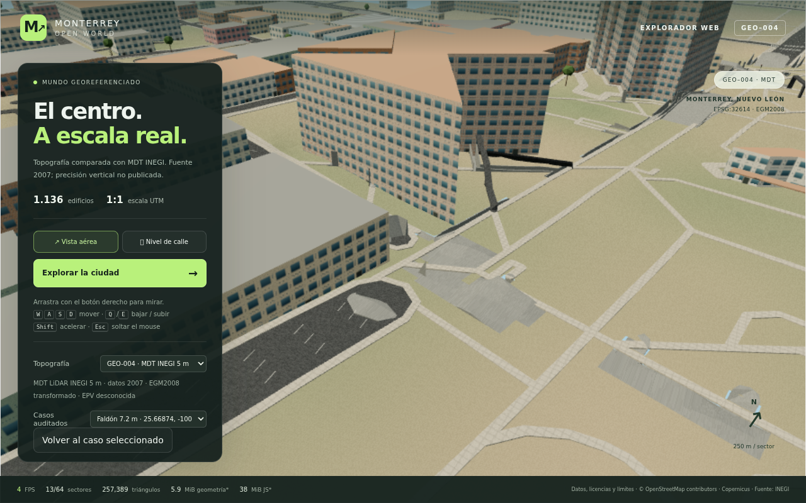
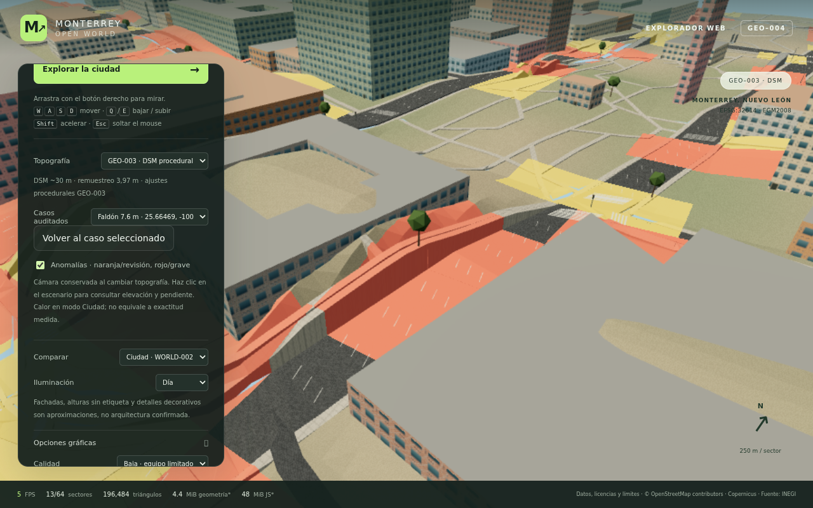
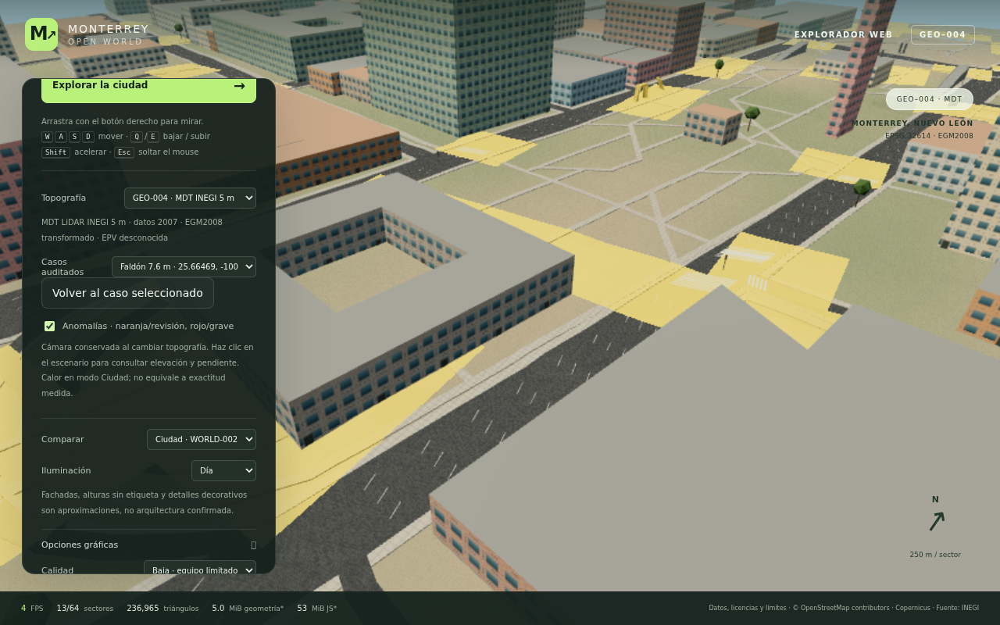
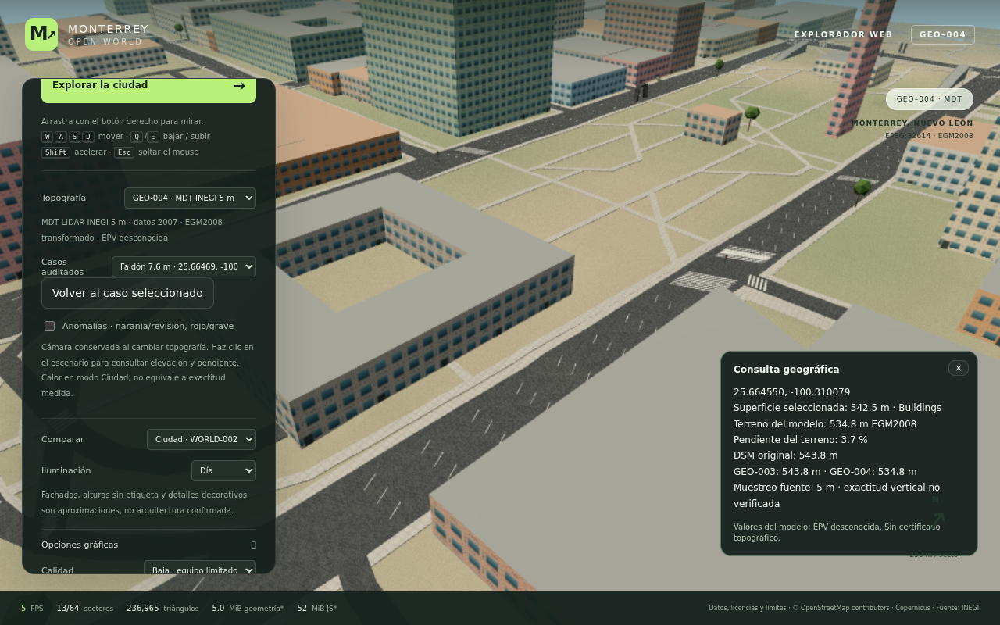
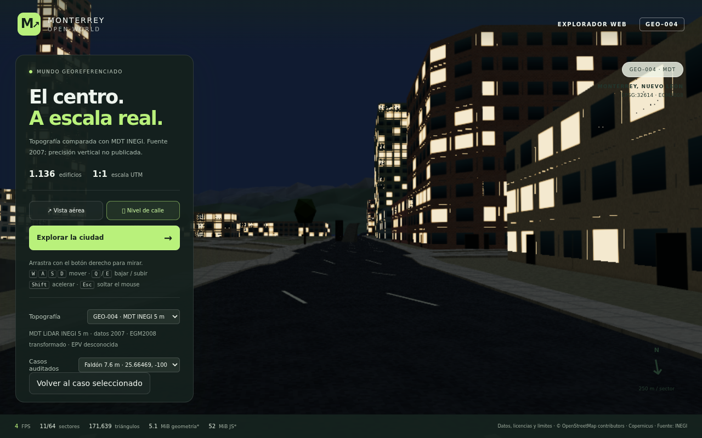

Capturas sin retoque de Chromium, WebGL mediante ANGLE SwiftShader por software, 1280 × 800. Cada pareja usa exactamente la misma cámara y mallas distintas verificadas por SHA256. No son imágenes generadas por IA ni capturas de Unreal.
Fuente nueva: INEGI MDT LiDAR 5 m, datos 2007, EPV no publicada. Puentes, túneles y cimentaciones aún requieren controles independientes. El mapa de calor incluye pendientes, superficies ausentes y estructuras pendientes: no significa que todas las zonas restantes sean correctas.
Pruebas y rendimiento observado · QA completo · Incidencias geográficas · Perfiles científicos









